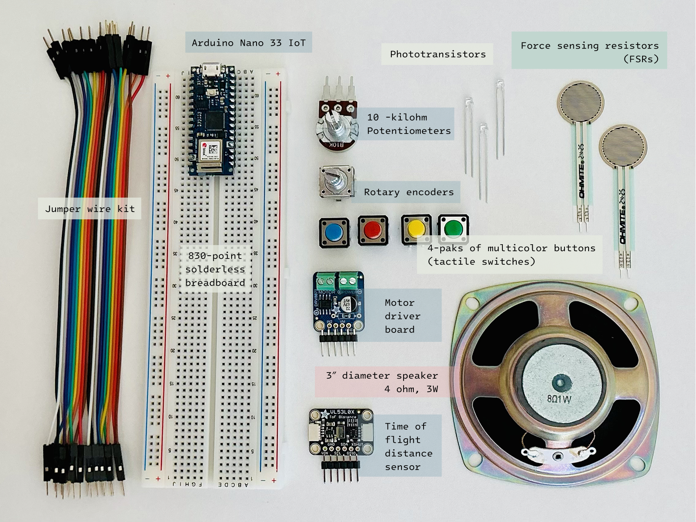
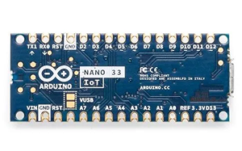
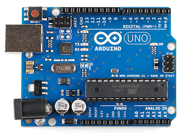
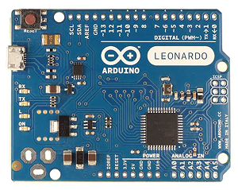
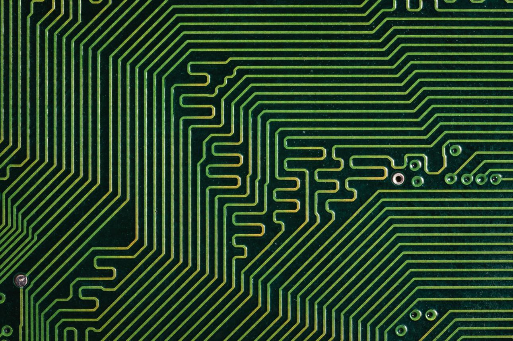
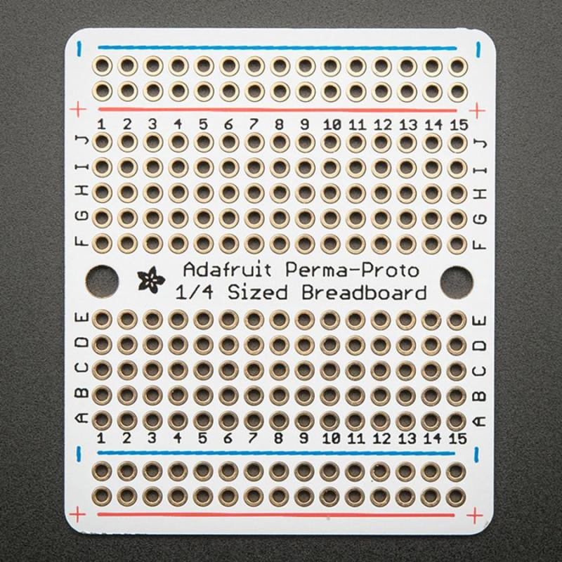

Physical Computing
WEEK 1 -
Parts And Tools Guide
Video: Basic Tools
Electricity: the Basics
Lab: Components , Lab: Setting Up A Breadboard , Lab: Electronics , Lab: Switches and Pushbuttons
↖ Learning resources ↗
ITP Pcomp Basic Parts
Advanced lists - ITP Pcomp Sensor List , ITP Pcomp Motor List , ITP Pcomp Lighting List
Picking a Microcontroller
Feedback Guides
↖ It may be useful in the future ↗
Parts

Potentiometers - 電位器 | Pushbuttons | Phototransistors - 光電晶體管 | Resistors - 電阻器 | Capacitors - 電容器 | Voltage regulators - 電壓穩定器
Microcontroller
This time, we are using the Arduino Nano 33 IoT. I have used the Arduino Uno and Leonardo before, but I was always a little confused about when to use different boards.



Now I have a better understanding of what to consider when choosing a board:
- Inputs and Outputs
How many input and output pins do I need? What kinds of sensors, buttons, LEDs, motors, or other components will I connect? - Special Features
What features does my project need? For example, if I need Wi-Fi or Bluetooth, I should choose a board that supports wireless communication. If I want the Arduino to act like a keyboard or mouse, a board like the Leonardo would be a good choice. - Size
During the prototyping stage, an Uno can be easier to work with because it is larger and makes wiring and debugging clearer. However, if I need to fit the board inside a small physical object, I might choose a smaller board such as a Nano or Micro. - Voltage
Does the board use 5V or 3.3V logic? I also need to check the voltage requirements of the sensors and modules I am using to make sure they are compatible. - Processing Power and Memory
How much CPU performance, RAM, and Flash memory does the project need? For simple sensor input and output, this may not matter much, but it becomes more important for more complex projects.
Board


- Printed circuit board (PCB) : Uses copper traces instead of lots of jumper wires.
- Perma-proto boards : Works like a breadboard, but you need to solder the components in place.
Hand Tools
- Wire Strippers, 20-30AWG Strip the insulation from wires. The most common wire you'll use is 22AWG thickness
- Needle Nose Pliers: Use them a lot for pulling wires, bending wires, and picking up components.
- Diagonal cutters: These are used for cutting wires and small bits of metal.
- Mini Screwdriver: Get a mini screwdriver that has both flat and Philips heads. Many devices have small screws that you need to take out.
- Hobby knife: They are effective for cutting cardboard, mat board, and other soft materials.
Electricity: the Basics
Definitions
- Electricity - the flow of electrical energy through conductive materials.
- Electrical Circuit - power source + convert the electrical energy into other forms of energy.
- Sensors - Other froms of energy -> Electrical energy
components that covert other forms of energy into electrical energy. (switches, knobs, light, motion sensors) - Actuators - Electrical energy -> Other froms of energy
components that convert electrical energy into other forms. (Light bulbs, motors, LEDs, heaters) - Electronic - reading changes in electrical properties as information. (EG: Microphone - sound pressure waves in the air -> electrical voltage)
- Transduction - change one energy into anthor
- Transducers - devices that do it ⤴
Relationships
- Voltage (Volts) - a measure of the difference in electrical potential energy between two points in a circuit. (the potential between two point of move charges like electrons)
- Current (Amperes, or Amps) - a measure of the magnitude of the flow of electrons through a particular point in a circuit. (movement of those charges)
- Resistance (Ohms) - a measure of a material's ability to oppose the flow of electricity. (resistance to that movement)
- V = I * R (Volts = Amps * Ohms) -> For a given voltage, more resistance means less current
- Electrical power (watts)
- P = V * I (Watts = Volts * Amps)
Rules that explain how electrical energy moves through these circuits:
- Current tends to follow the path of least resistance to the ground.
- In any given circuit, the total voltage around the path of the circuit is zero.
- The amount of current going into any point in a circuit is the same as the amount coming out of that point.
Lab - Setting Up A Breadboard
Powering A Breadboard Circuit From A Microcontroller Via A DC Power Supply
When you're not powering it via its USB connector, the Nano 33 IoT and the Nano Every can be
powered through the Vin pin (pin 15, bottom left side of the module) by a voltage range from 7 –
21 volts.
When you power the Nano this way, you get 3.3V from the 3V3 pin (pin 2) just as if you were
powering from USB.
If you have components that need a higher voltage, you can supply them
directly from your power supply via the Vin pin.
Lab - Measuring Component
If your meter is not an auto-ranging meter, you want the meter set to the approximate range, and
slightly higher than, of the component's resistance.
(EX: measure a 10-Kilohm resistance - you'd choose 20K, bc 10K and 20K are in the same order of
magnitude / For a 50K resistance, or anything over 20K, you'd have to step up to 200K)
If you don't know the component's resistance, start with the meter set to a high reading,
like
2M (2 Megohms). If you get a reading of zero, turn the meter one step lower, and keep doing so
until you get a good reading.
A reading of 1 on the left side of the meter, or of 0L, indicates
you're set to too low a range.
Resistance and Diodes
If you measure the resistance of a diode (such as the LED shown in Figure 20), you may see a
number flash briefly on the meter, then disappear.
This is because diodes ideally have little or no resistance once voltage is flowing
through
them, but have what's called a forward bias , which
is a minimum voltage needed to get current flowing. Before you reach the forward bias voltage,
the diode's resistance is ideally infinite. After you reach it, the resistance is ideally
zero.
There are no ideals in electronics, however, which is why you see a resistance value flash
briefly as the meter meets the diode's forward bias. Most meters have a diode check setting,
marked with a diode symbol, that will allow you to check the forward bias of the diode.
Measuring Voltage
Voltage is a measure of the difference in electrical potential energy between two points in a circuit. It's always measured between two points in a circuit. Measuring the voltage between the two sides of a component like an LED tells you how much voltage that component uses. When you're measuring voltage between one side of a component and another, for example, it's called measuring the voltage drop “across” the component.
A typical LED operates at a voltage of 2.0-2.6 volts (V) and consumes approximately 20 milliamps (mA). Different color LEDs are made with different elements, and have slightly different voltage drops.
The remaining energy is lost as heat generated from the components.
To measure the amperage through a given component, you need to place your meter in series with the component. When two components are in series, the amperage flowing through both of them is the same. To measure the amperage through any one of the LEDs in this circuit, you'll need to disconnect one of the LED's ends from the circuit (disconnect power first!) and use the meter to complete the circuit